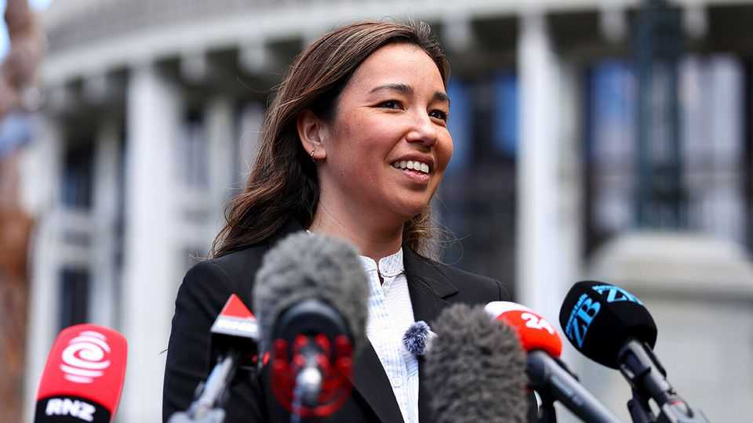

Meet the millennial centrist shaking up New Zealand’s election
The Opportunity Party claims to be taking on the rich world’s biggest problems

Oct 29th 2026
FOR A SMALL party in a small country, New Zealand’s Opportunity Party has some big ideas about how to solve the rich world’s biggest problems. Campaigning ahead of the November 7th general election, Qiulae Wong, its polished 38-year-old leader, is pitching a universal basic income of NZ$370 ($210) per week. The handout, she says, would replace most other welfare payments and offer a cushion for middle-class workers hit by layoffs because of artificial intelligence. To fund the scheme, the Opportunity Party would introduce a tax on urban land at a rate of 1.75% of its value per year.
On the campaign trail a 40-minute ferry ride from downtown Auckland, Ms Wong (rather bravely) tells a room crammed mostly with rich property owners that the new tax would help to slow rising housing costs by discouraging property speculation. It would also, she says, put capital now sunk into land to more productive use. As pensioners on the lawn outside play croquet, Ms Wong fields questions about what the plan would mean. The tax might need to be phased in, she admits.
Opportunity is polling at just above the 5% threshold needed to break into parliament. If it does so, analysts say that Ms Wong may well end up as the kingmaker between two competing minority coalitions. Both of the two biggest parties, National on the right and Labour on the left, have seen their polling numbers shrink under the weight of unpopular leaders. Christopher Luxon, the incumbent prime minister and National leader, has presided over a stagnant economy and stubborn inflation. Chris Hipkins, the Labour leader, succeeded Jacinda Ardern in 2023 but lacks her star power.
That has left many New Zealanders thinking that the real question in this election is which minor parties will help National or Labour to form a government. Mr Hipkins can call upon the Greens and the Maori Party to his left, but their culture-war style of politics makes some centre-left voters grimace. Mr Luxon’s current coalition partners do much the same on the right. ACT, which started life as a libertarian party, has become more of an anti-woke protest movement. And New Zealand First, another small party, has a long record of divisive populism.
Ms Wong cannily says that she could work with either bloc, and is careful to avoid betraying her ideological biases as voters quiz her about her preferences. That has allowed Opportunity to attract voters from across the political spectrum. Rich Green voters, for instance, see in her a more business-friendly approach to setting emissions targets; libertarians are drawn to the idea of shrinking the state by getting rid of the bureaucrats who hand out means-tested benefits.
Opportunity has its critics. Helen Clark, a Labour leader who was prime minister from 1999 to 2008, has taken to calling it the “Opportunistic” party, arguing that its self-described centrism makes it an empty vessel. Politicians on both sides bitterly accuse it of just being a stalking horse for their opponents. But its most extreme critic has been Winston Peters, the foreign minister and leader of New Zealand First.
Mr Peters, who has a long record of making racist taunts at Asian New Zealanders despite his own part-Maori heritage, seemed distinctly uncomfortable on a debate stage earlier this month with Ms Wong, who immigrated to New Zealand from Fiji as an infant. And yet his discomfort may have less to do with her ethnic-Chinese father than her political strategy. Despite his populist rhetoric, Mr Peters has long positioned himself as New Zealand’s kingmaker, supporting governments led by both Labour and National on two occasions each. No other minor party leader has threatened to rival him in that role—until now. ■
For exclusive coverage of Asian politics, economics and security, sign up to Asia Bulletin, our weekly subscriber-only newsletter.